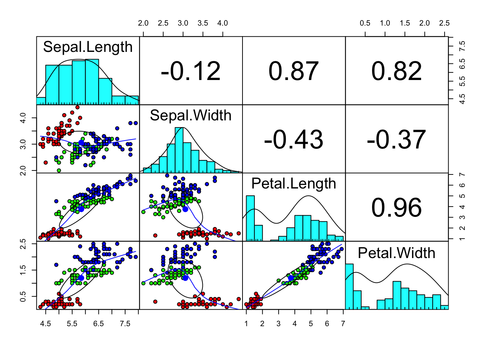
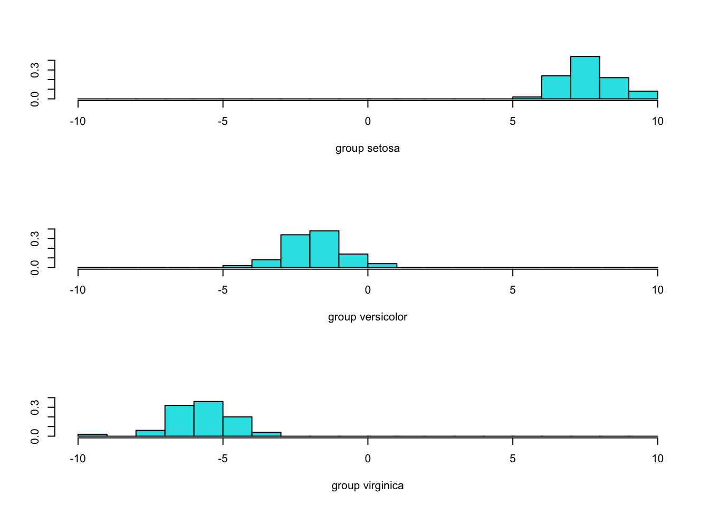
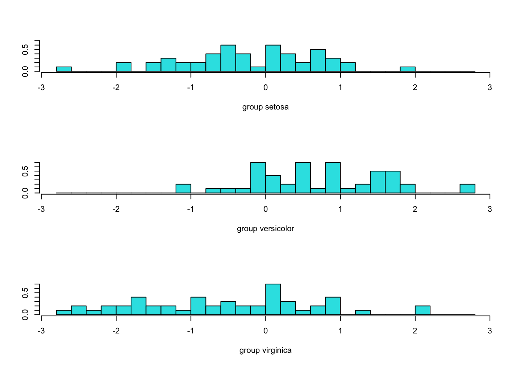
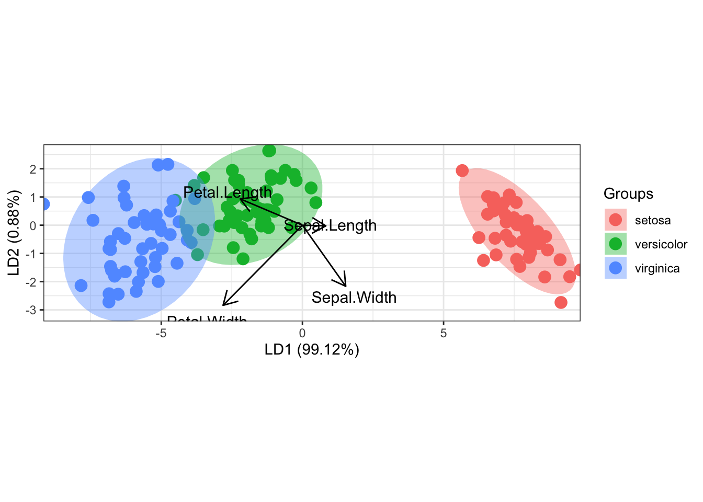
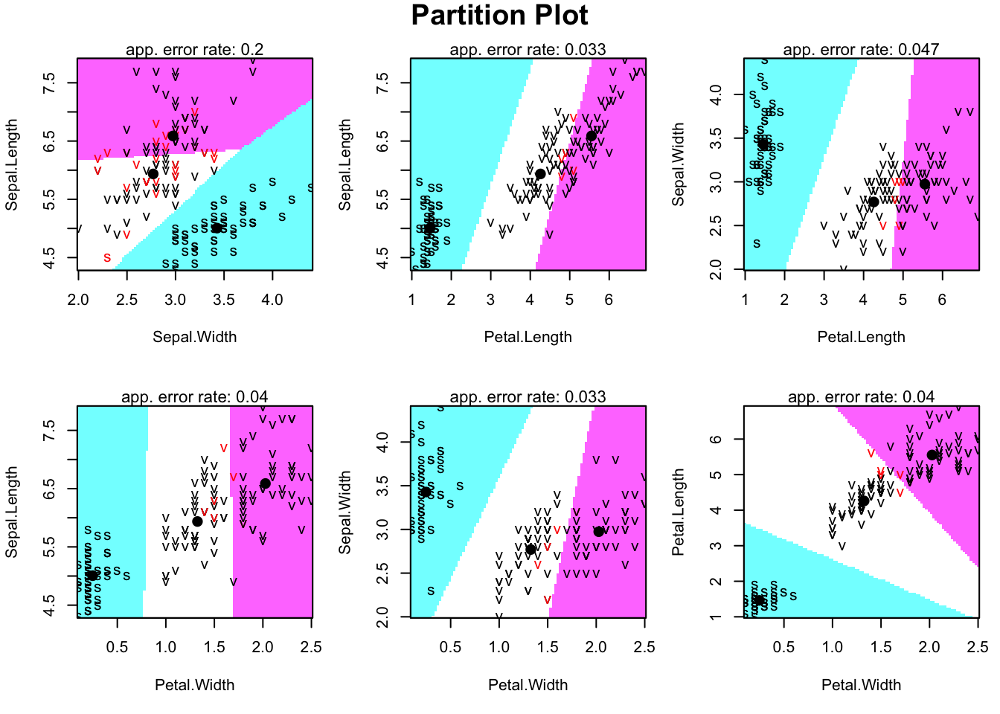
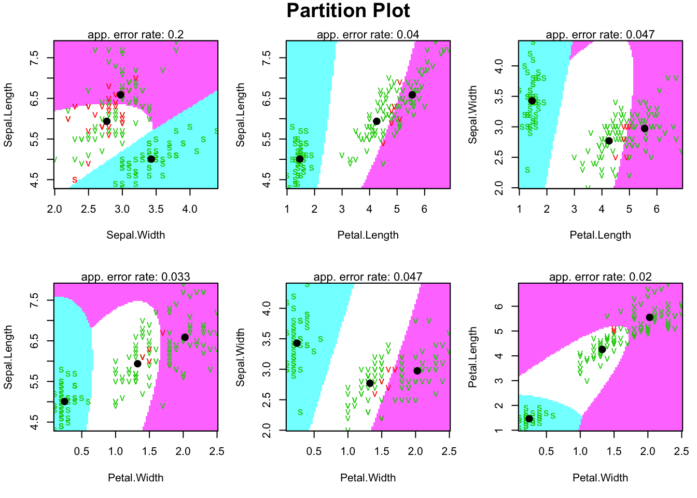

install.packages("ggplot2")
install.packages("tidyverse")
install.packages("MASS")
install.packages("klaR")
install.packages("devtools")
install.packages("psych")
install.packages("MVN")
install.packages("biotools")5 LDA在R中的实现
本章介绍R中的判别分析工具。
安装包
加载包
library(ggplot2)
library(tidyverse)
library(psych)
library(biotools)
library(MVN)1 准备工作
1.1 考察数据分布
library(psych)
#调用数据iris
data(iris)
#Correlation ellipses
#The narrower the ellipse
#the greater the correlation between the variables
pairs.panels(iris[1:4],
gap = 0,
bg = c("red", "green", "blue")[iris$Species],
pch = 21)
1.2 检验LDA分析的假设是否成立
1.2.1 多元正态性检验
Mardia检验
原假设:数据服从多元正态分布
备择假设:数据不服从多元正态分布
# 多元正态性检验（Mardia测试）
MVN::mardia(iris[1:50, 1:4]) Test Statistic p.value Method
1 Mardia Skewness 25.664345 0.1771859 asymptotic
2 Mardia Kurtosis 1.294992 0.1953229 asymptoticMVN::mardia(iris[51:100, 1:4]) Test Statistic p.value Method
1 Mardia Skewness 25.1850115 0.1944445 asymptotic
2 Mardia Kurtosis -0.5718664 0.5674125 asymptoticMVN::mardia(iris[101:150, 1:4]) Test Statistic p.value Method
1 Mardia Skewness 26.2705982 0.1570597 asymptotic
2 Mardia Kurtosis 0.1526142 0.8787025 asymptotic1.2.2 检验不同类别的协方差矩阵是否相等
Box’s M检验：检验多个类别的协方差矩阵是否相等
原假设：所有类别的协方差矩阵相等
备择假设：至少有一个类别的协方差矩阵与其他类别不同
library(biotools)
boxM(iris[1:4], iris$Species)
Box's M-test for Homogeneity of Covariance Matrices
data: iris[1:4]
Chi-Sq (approx.) = 140.94, df = 20, p-value < 2.2e-162 判别函数的估计、预测和评估
2.1 估计
#加载包MASS(Modern Applied Statistics with S)
#https://www.stats.ox.ac.uk/pub/MASS4/
library(MASS)
#估计linear discriminant model
# 写法一：
linear <- lda(Species ~ Sepal.Length + Sepal.Width + Petal.Length + Petal.Width, iris)
linearCall:
lda(Species ~ Sepal.Length + Sepal.Width + Petal.Length + Petal.Width,
data = iris)
Prior probabilities of groups:
setosa versicolor virginica
0.3333333 0.3333333 0.3333333
Group means:
Sepal.Length Sepal.Width Petal.Length Petal.Width
setosa 5.006 3.428 1.462 0.246
versicolor 5.936 2.770 4.260 1.326
virginica 6.588 2.974 5.552 2.026
Coefficients of linear discriminants:
LD1 LD2
Sepal.Length 0.8293776 -0.02410215
Sepal.Width 1.5344731 -2.16452123
Petal.Length -2.2012117 0.93192121
Petal.Width -2.8104603 -2.83918785
Proportion of trace:
LD1 LD2
0.9912 0.0088 # 写法二：
linear <- lda(Species ~., iris)
#查看ld的属性
attributes(linear)$names
[1] "prior" "counts" "means" "scaling" "lev" "svd" "N"
[8] "call" "terms" "xlevels"
$class
[1] "lda"linear$prior setosa versicolor virginica
0.3333333 0.3333333 0.3333333 linear$counts setosa versicolor virginica
50 50 50 linear$means Sepal.Length Sepal.Width Petal.Length Petal.Width
setosa 5.006 3.428 1.462 0.246
versicolor 5.936 2.770 4.260 1.326
virginica 6.588 2.974 5.552 2.026linear$scaling LD1 LD2
Sepal.Length 0.8293776 -0.02410215
Sepal.Width 1.5344731 -2.16452123
Petal.Length -2.2012117 0.93192121
Petal.Width -2.8104603 -2.839187852.2 预测
#保存判别函数的预测结果
p <- predict(linear, iris)
predict_class <- p$class
predict_class [1] setosa setosa setosa setosa setosa setosa
[7] setosa setosa setosa setosa setosa setosa
[13] setosa setosa setosa setosa setosa setosa
[19] setosa setosa setosa setosa setosa setosa
[25] setosa setosa setosa setosa setosa setosa
[31] setosa setosa setosa setosa setosa setosa
[37] setosa setosa setosa setosa setosa setosa
[43] setosa setosa setosa setosa setosa setosa
[49] setosa setosa versicolor versicolor versicolor versicolor
[55] versicolor versicolor versicolor versicolor versicolor versicolor
[61] versicolor versicolor versicolor versicolor versicolor versicolor
[67] versicolor versicolor versicolor versicolor virginica versicolor
[73] versicolor versicolor versicolor versicolor versicolor versicolor
[79] versicolor versicolor versicolor versicolor versicolor virginica
[85] versicolor versicolor versicolor versicolor versicolor versicolor
[91] versicolor versicolor versicolor versicolor versicolor versicolor
[97] versicolor versicolor versicolor versicolor virginica virginica
[103] virginica virginica virginica virginica virginica virginica
[109] virginica virginica virginica virginica virginica virginica
[115] virginica virginica virginica virginica virginica virginica
[121] virginica virginica virginica virginica virginica virginica
[127] virginica virginica virginica virginica virginica virginica
[133] virginica versicolor virginica virginica virginica virginica
[139] virginica virginica virginica virginica virginica virginica
[145] virginica virginica virginica virginica virginica virginica
Levels: setosa versicolor virginica#预测新个案
new_case <- data.frame(Sepal.Length = c(5.1,5.9,6.6),
Sepal.Width = c(3.5,2.8,2.9),
Petal.Length = c(1.5,4.3,5.6),
Petal.Width = c(0.25,1.3,2.1))
new_class <- predict(linear, new_case)
new_class$class
[1] setosa versicolor virginica
Levels: setosa versicolor virginica
$posterior
setosa versicolor virginica
1 1.000000e+00 1.117074e-20 3.314219e-40
2 2.963609e-20 9.998273e-01 1.727265e-04
3 4.169387e-42 3.505610e-05 9.999649e-01
$x
LD1 LD2
1 7.701156 -0.3491879
2 -1.823849 0.7749274
3 -6.199781 -0.51824892.3 评估预测效果
#绘制观测组别和预测组别的列联表
tab <- table(Actual = iris$Species, Predicted = predict_class)
tab Predicted
Actual setosa versicolor virginica
setosa 50 0 0
versicolor 0 48 2
virginica 0 1 49#计算预测正确率
sum(diag(tab))/sum(tab)[1] 0.983 可视化工具
3.1 单个判别函数得分的直方图
#判别函数得分的histogram
library(MASS)
#保存预测结果
p <- predict(linear, iris)
#提取预测结果中存储的判别得分
ldahist(p$x[,1], iris$Species)
ldahist(p$x[,2], iris$Species)
3.2 两个判别函数得分的二维图
# Enable the r-universe repo
options(repos = c(
fawda123 = 'https://fawda123.r-universe.dev',
CRAN = 'https://cloud.r-project.org'))
# Install ggord
install.packages('ggord')#Bi-plot
library(devtools)
library(ggord)
linear <- lda(Species ~., iris)
ggord(linear, iris$Species)
linear$scaling LD1 LD2
Sepal.Length 0.8293776 -0.02410215
Sepal.Width 1.5344731 -2.16452123
Petal.Length -2.2012117 0.93192121
Petal.Width -2.8104603 -2.83918785椭圆
统计意义：
椭圆基于类别样本在LD1和LD2上的协方差矩阵绘制，反映该类别数据的分散程度和形状。
每个椭圆围住该类别的大部分数据点（通常95%），中心点是类别的均值（质心）。
中心：椭圆的中心是该类别在LD1和LD2上的平均得分，反映类别在判别空间的“位置”。
大小：椭圆越大，说明该类别样本在LD1和LD2上的分散程度越高（方差大）；椭圆越小，样本越集中。
形状：椭圆的形状由协方差矩阵决定：
接近圆形：LD1和LD2的方差相似，特征间相关性低。
拉长：某个方向（LD1或LD2）方差较大，或特征间相关性高。
方向：椭圆的倾斜方向反映LD1和LD2的协方差，倾斜说明两轴得分有相关性。
分类效果：
椭圆分离：如果椭圆分得很开（如“金牌”和“银牌”不重叠），说明LDA有效区分了类别。
椭圆重叠：如果椭圆重叠，说明类别在LD1和LD2上难以区分，可能因为数据不满足LDA假设（正态分布或同协方差矩阵）。
ggord图中的三个椭圆表示每个类别在LD1和LD2判别函数空间中的数据分布范围（通常是95%置信椭圆）。
椭圆的形状和大小反映类别的协方差和分散程度，位置反映类别均值，重叠情况反映LDA的分类效果。
圆形椭圆：LD1和LD2的方差相似，且两者相关性低（协方差接近0）。
拉长椭圆：LD1和LD2的方差差异大，或两者有较强相关性（协方差较大）。
箭头
帮助理解哪些原始变量（特征）对LDA的分类最重要
方向解读：
如果箭头指向LD1正方向（如右方），说明该变量值增加会使样本的LD1得分增加。
如果箭头接近垂直于LD1，说明该变量主要影响LD2。
如果箭头与某类别椭圆的方向一致，说明该变量对该类别的区分作用强。
长度解读：
长箭头表示该变量对分类贡献大，可能是区分三个梯度的关键特征。
短箭头表示变量影响小，可能对分类帮助有限
3.3 分类边界的可视化 Partition plot
LDA边界
library(klaR)
partimat(Species ~., data = iris, method = "lda")
iris %>%
group_by(Species) %>%
summarise(across(everything(), mean))# A tibble: 3 × 5
Species Sepal.Length Sepal.Width Petal.Length Petal.Width
<fct> <dbl> <dbl> <dbl> <dbl>
1 setosa 5.01 3.43 1.46 0.246
2 versicolor 5.94 2.77 4.26 1.33
3 virginica 6.59 2.97 5.55 2.03 QDA边界
partimat(Species ~., data = iris, method = "qda")
QDA边界,标记判别错误的个案
partimat(Species ~ ., data = iris, method = "qda",
col.correct = "green3", col.wrong = "red")
partimat() 创建分类边界的可视化图，展示每个特征对（如 Sepal.Length vs. Sepal.Width）的分类区域。
每个子图显示 QDA 的决策边界，颜色或填充表示不同类别（Species: setosa, versicolor, virginica）。
典型子图结构
X轴和Y轴：两个特征（例如 Sepal.Length vs. Petal.Length）。
颜色/填充区域：每个类别（setosa, versicolor, virginica）用不同颜色填充，代表 QDA 预测的分类区域。
决策边界：曲线或非线性边界，分离不同类别区域。
数据点：散点表示实际观测值，颜色对应其真实类别，用于验证边界准确性。
表观错误率（apparent error rate，training error），即在训练集上模型的错误分类比例
类别分离：setosa 与 versicolor/virginica 的分离较好，versicolor 和 virginica 边界较模糊，QDA 的非线性边界比 LDA 更贴合数据。
协方差影响：QDA 允许每个类别的协方差矩阵不同，边界形状反映了数据分布的真实复杂性（例如 virginica 的 petall 特征方差较大）。
误分类区域：重叠区域（versicolor/virginica）可能显示混合颜色，提示分类不确定性。